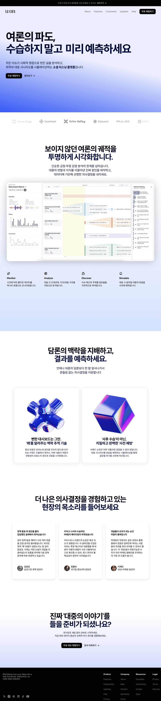

여론 분석 플랫폼
여론의 파도, 수습하지 말고 미리 예측하세요.

문제
여론은 예고 없이 밀려왔다가 순식간에 가라앉습니다. 대부분의 조직은 여론이 이미 정점을 지난 뒤에야 대응을 시작하기 때문에, 선제적으로 움직일 수 있는 골든타임을 놓치곤 합니다. 문제는 데이터가 없어서가 아니라, 흩어진 신호를 미리 엮어 다음 파도를 예측할 방법이 없다는 데 있습니다. 사후 대응이 아니라 사전 예측이 가능한 구조가 필요했습니다.
접근 방식
실시간 데이터 시각화를 중심에 둔 랜딩 경험을 설계해, 여론의 흐름을 수집·분석하고 앞으로의 시나리오까지 시뮬레이션해 보여주는 대시보드형 플랫폼을 만들었습니다. 데이터 수집부터 분석, 예측 시뮬레이션까지 하나의 흐름으로 연결해, 방문자가 스크롤만으로도 플랫폼의 핵심 가치를 체감할 수 있도록 구성했습니다.
-
Monitor
실시간으로 발생하는 여론 신호를 놓치지 않고 수집하고 추적합니다.
-
Analyze
수집된 원시 데이터를 구조화된 분석과 인사이트로 정리합니다.
-
Discover
겉으로 드러나지 않는 여론의 숨겨진 패턴과 맥락을 발견합니다.
-
Simulate
앞으로 여론이 어떻게 흘러갈지 미래 시나리오를 시뮬레이션합니다.
결과
의사결정권자들이 여론 변화를 사전에 파악하고 선제적으로 대응할 수 있는 기반을 마련했습니다. 여론이 정점에 이르기 전에 흐름을 읽고 움직일 수 있게 되면서, 대응은 더 빨라지고 판단은 더 여유로워졌습니다.
여론이 커지기 전에 흐름을 미리 볼 수 있다는 점이 가장 큰 변화였습니다. 대응 방식 자체가 달라졌습니다. — 공공기관 정책 담당자
위기 상황에서 촉박하게 판단하던 것에서, 미리 준비하고 대응하는 쪽으로 업무 방식이 바뀌었습니다. — 대기업 홍보/PR 담당자